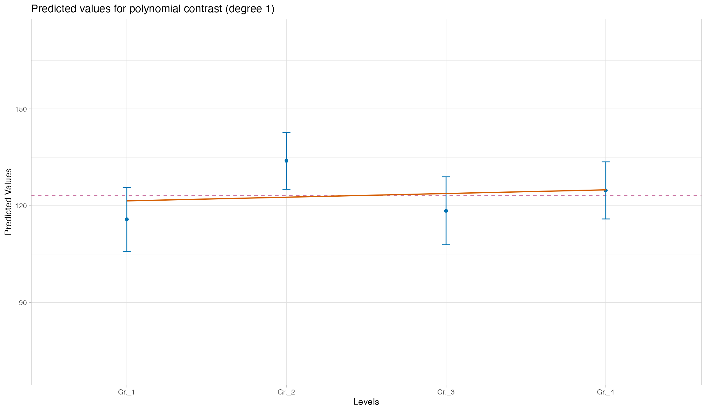

MoPlotOneWay
MoPlotOneWay() is a function for visualizing the results
of a linear model with one categorical predictor and one numeric
dependent variable. It takes as input a model created with
lm() and produces a plot that highlights group means with
their associated uncertainty using bars, and visually emphasizes
significant contrasts through colored lines. Optionally, the raw data
points can be displayed in the plot. A secondary panel shows the model
coefficients, including standardized beta values and effect sizes such
as Cohen’s d, allowing for a clear and informative summary of
the model’s findings. MoPlotOneWay() function supports a
variety of contrast coding schemes for categorical predictors, including
treatment coding (dummy coding), sum to zero coding, Helmert coding,
reverse Helmert coding, polynomial coding, sliding difference coding,
and customized coding.
1 Default Treatment coding
Treatment coding, or dummy coding is a common way to represent categorical variables in regression models. It transforms a categorical predictor with k levels into k − 1 binary (0/1) variables, each comparing one level to a reference (baseline) category. The following example uses the classic iris dataset with treatment contrasts and shows the plot without raw data points or coefficient panel, using a significance level of 0.05:
library(MoPlot)
# Using Iris data
data(iris)
iris$Species <- factor(iris$Species)
contrasts(iris$Species) <- contr.treatment(3)
# Fit the model
model <- lm(Sepal.Length ~ Species, data = iris)
# MoPlotting
MoPlotOneWay(model, data = FALSE, coef = FALSE, siglevel = 0.05)
#> This graphical representation illustrates the linear model, where
#> Species is the categorical predictor (represented on the x-axis with its levels),
#> and Sepal.Length is the numerical dependent variable (plotted on the y-axis).
#> The contrast type applied is treatment, which compares each group mean against
#> the baseline mean of setosa (the first level of the predictor).
#> Blue dots indicate the expected values (means) for each group, while the error bars
#> represent the uncertainty associated with these estimates.
#> The dashed purple line marks the baseline expected value.
#> Green lines highlight significant contrasts, with a significance threshold of 0.05 for the first type of error.Here is the same plot, but including raw data points and the coefficient panel, also with a 0.05 significance level:
# MoPlotting
MoPlotOneWay(model, data = TRUE, coef = TRUE, siglevel = 0.05)
#> This graphical representation illustrates the linear model, where
#> Species is the categorical predictor (represented on the x-axis with its levels),
#> and Sepal.Length is the numerical dependent variable (plotted on the y-axis).
#> The contrast type applied is treatment, which compares each group mean against
#> the baseline mean of setosa (the first level of the predictor).
#> Blue dots indicate the expected values (means) for each group, while the error bars
#> represent the uncertainty associated with these estimates.
#> The dashed purple line marks the baseline expected value.
#> Green lines highlight significant contrasts, with a significance threshold of 0.05 for the first type of error.2 Sum coding
Sum coding is another way to represent categorical variables in regression models. Unlike treatment coding, sum coding compares each level to the overall mean rather than a specific reference group. The following example uses again the iris dataset with sum contrasts, showing the plot without raw data points or coefficient panel at a significance level of 0.1
# Using Sum coding
contrasts(iris$Species) <- contr.sum(3)
# Fit the model
model <- lm(Sepal.Length ~ Species, data = iris)
# MoPlotting
MoPlotOneWay(model, data = FALSE, coef = FALSE, siglevel = 0.1)
#> This graphical representation depicts the linear model, with
#> Species as the categorical predictor (levels shown on the x-axis),
#> and Sepal.Length as the numerical dependent variable (values displayed on the y-axis).
#> The contrast type is sum, where each group mean is compared to
#> the intercept, which serves as the baseline.
#> Blue dots represent the expected values (means) for each group, and error bars capture
#> the uncertainty associated with these estimates.
#> The dashed purple line marks the intercept expected value.
#> The green error bars highlight significant contrasts, with 0.1 as the threshold for the first type of error.Here is the same plot including raw data points and the coefficient panel:
# MoPlotting
MoPlotOneWay(model, data = TRUE, coef = TRUE, siglevel = 0.1)3 Helmert coding
Helmert coding is a contrast coding scheme where each level of a
categorical variable is compared to the mean of previous levels. The
following example uses a generated dataset (using
DatasetOne()) with Helmert contrasts. It first shows a plot
without raw data points or coefficient panel at a significance level of
0.05:
# Using a custom function to generate data with four groups
DT <- DatasetOne(n_sample = 20, means = c(120, 135, 115, 120), sds = 20)
DT$Ind <- as.factor(DT$Ind)
contrasts(DT$Ind) <- contr.helmert(4)
# Fit the model
model <- lm(Dep ~ Ind, data = DT)
# MoPlotting sum
MoPlotOneWay(model, data = FALSE, coef = FALSE, siglevel = 0.05)
#> This graphical representation depicts the linear model, with
#> Ind as the categorical predictor (levels are represented on the x-axis),
#> and Dep as the numerical dependent variable (values are shown on the y-axis).
#> The applied contrast type is helmert. In this type of contrast, each group mean is compared to
#> the cumulative mean of all previous groups.
#> Blue dots represent the expected values (means) for the cumulative means,
#> while orange dots represent the expected values (means) for each individual group.
#> Error bars indicate the uncertainty associated with each expected value.
#> The dashed purple line marks the baseline expected value.
#> Green lines highlight significant contrasts, with 0.05 serving as the threshold for the first type of error.4 Reverse Helmert coding
Reverse Helmert coding compares each level to the mean of the subsequent levels. It is the reverse of Helmert coding and can be useful in some ordered categorical predictors. The example below uses the same custom dataset as before with reverse Helmert contrasts, showing the plot without raw data or coefficient panel at a 0.05 significance level:
# Using Reverse Helmert coding
ReverseHelmert <- function(n) {
mat <- matrix(0, n, n - 1)
for (i in 2:n) {
mat[i, i - 1] <- 1
mat[1:(i - 1), i - 1] <- -1 / (i - 1)
}
return(mat)
}
contrasts(DT$Ind) <- ReverseHelmert(4)
# Fit the model
model <- lm(Dep ~ Ind, data = DT)
# MoPlotting reverse Helmert
MoPlotOneWay(model, data = FALSE, coef = FALSE, siglevel = 0.05)
#> This graphical representation depicts the linear model, with
#> Ind as the categorical predictor (levels are represented on the x-axis),
#> and Dep as the numerical dependent variable (values are shown on the y-axis).
#> The applied contrast type is ReverseHelmert. In this type of contrast, each group mean is compared to
#> the cumulative mean of all previous groups.
#> Blue dots represent the expected values (means) for the cumulative means,
#> while orange dots represent the expected values (means) for each individual group.
#> Error bars indicate the uncertainty associated with each expected value.
#> The dashed purple line marks the baseline expected value.
#> Green lines highlight significant contrasts, with 0.05 serving as the threshold for the first type of error.Here is the same plot including raw data points and the coefficient panel:
MoPlotOneWay(model, data = TRUE, coef = TRUE, siglevel = 0.05)5 Polynomial coding
Polynomial coding tests for trends across ordered factor levels. It compares levels based on polynomial contrasts (linear, quadratic, cubic, etc.). The following example uses polynomial contrasts on the custom dataset, showing the plot without raw data or coefficients at significance level 0.05:
# Using Polynomial coding
contrasts(DT$Ind) <- contr.poly(4)
# Fit the model
model <- lm(Dep ~ Ind, data = DT)
# MoPlotting polynomial contrasts
MoPlotOneWay(model, data = FALSE, coef = FALSE, siglevel = 0.05)
#> This graphical representation illustrates the linear model, where
#> Ind is the categorical predictor (shown on the x-axis with its levels),
#> and Dep is the numerical dependent variable (plotted on the y-axis).
#> The contrast type applied is poly, which decomposes the overall trend across levels into polynomial components
#> such as linear, quadratic, and cubic trends.
#> Each plot shows how well a trend of a given degree captures the pattern in the data.
#> The lines interpolate the expected values based on polynomial regression,
#> and are shown in green when the corresponding component is statistically significant (p < 0.05 ).
#> [1] "Use the ARROWS to see the different plots"And including raw data and coefficients:
MoPlotOneWay(model, data = TRUE, coef = TRUE, siglevel = 0.05)#> This graphical representation illustrates the linear model, where
#> Ind is the categorical predictor (shown on the x-axis with its levels),
#> and Dep is the numerical dependent variable (plotted on the y-axis).
#> The contrast type applied is poly, which decomposes the overall trend across levels into polynomial components
#> such as linear, quadratic, and cubic trends.
#> Each plot shows how well a trend of a given degree captures the pattern in the data.
#> The lines interpolate the expected values based on polynomial regression,
#> and are shown in green when the corresponding component is statistically significant (p < 0.05 ).
#> [1] "Use the ARROWS to see the different plots"6 Sliding Difference coding
Sliding difference coding compares adjacent levels of the categorical variable, useful to detect stepwise differences. The following example applies sliding difference contrasts:
# Using Sliding Difference coding
contrasts(DT$Ind) <- MASS::contr.sdif(4)
# Fit the model
model <- lm(Dep ~ Ind, data = DT)
# MoPlotting sliding difference contrasts
MoPlotOneWay(model, data = FALSE, coef = FALSE, siglevel = 0.05)
#> This graphical representation illustrates the linear model, where
#> Ind is the categorical predictor (levels represented on the x-axis),
#> and Dep is the numerical dependent variable (values shown on the y-axis).
#> The contrast type applied is sdif, where each group mean is compared to
#> the mean of the subsequent group.
#> Blue squares represent the estimated differences (Beta) between adjacent groups;
#> green segments denote significant contrasts (p < 0.05).
#> Error bars show uncertainity around each group mean; the dashed line is the intercept.With raw data and coefficients included:
MoPlotOneWay(model, data = TRUE, coef = TRUE, siglevel = 0.05)
#> This graphical representation illustrates the linear model, where
#> Ind is the categorical predictor (levels represented on the x-axis),
#> and Dep is the numerical dependent variable (values shown on the y-axis).
#> The contrast type applied is sdif, where each group mean is compared to
#> the mean of the subsequent group.
#> Blue squares represent the estimated differences (Beta) between adjacent groups;
#> green segments denote significant contrasts (p < 0.05).
#> Error bars show uncertainity around each group mean; the dashed line is the intercept.7 Customized coding
MoPlotOneWay() also supports customized contrast coding schemes. You can specify your own contrast matrix for a factor variable. Below is an example of using custom contrasts:
# Define custom contrasts
custom_contrasts <- matrix(c(
1, 1, 0,
1, -1, 0,
-1, 0, 1,
-1, 0, -1
), ncol = 3, byrow = TRUE)
rownames(custom_contrasts) <- levels(DT$Ind)
colnames(custom_contrasts) <- c("C1", "C2", "C3")
contrasts(DT$Ind) <- custom_contrasts
# Fit the model
model <- lm(Dep ~ Ind, data = DT)
# MoPlotting with customized contrasts
MoPlotOneWay(model, data = FALSE, coef = FALSE, siglevel = 0.05)#> In Contrast_1, the contrast compares:
#> - Group 1: Gr._1, Gr._2 (Mean = 124.83, SE = 3.59, 95% CI = [117.8, 131.86])
#> - Group 2: Gr._3, Gr._4 (Mean = 121.57, SE = 3.44, 95% CI = [114.82, 128.32])
#>
#> This contrast evaluates whether the mean of Gr._1, Gr._2 differs from that of Gr._3, Gr._4.
#>
#> In Contrast_2, the contrast compares:
#> - Group 1: Gr._1 (Mean = 115.78, SE = 4.96, 95% CI = [106.05, 125.5])
#> - Group 2: Gr._2 (Mean = 133.89, SE = 4.43, 95% CI = [125.21, 142.56])
#>
#> This contrast evaluates whether the mean of Gr._1 differs from that of Gr._2.
#>
#> In Contrast_3, the contrast compares:
#> - Group 1: Gr._3 (Mean = 118.41, SE = 5.29, 95% CI = [108.05, 128.78])
#> - Group 2: Gr._4 (Mean = 124.73, SE = 4.44, 95% CI = [116.03, 133.43])
#>
#> This contrast evaluates whether the mean of Gr._3 differs from that of Gr._4.With raw data and coefficient panel:
MoPlotOneWay(model, data = TRUE, coef = TRUE, siglevel = 0.05)#> In Contrast_1, the contrast compares:
#> - Group 1: Gr._1, Gr._2 (Mean = 124.83, SE = 3.59, 95% CI = [117.8, 131.86])
#> - Group 2: Gr._3, Gr._4 (Mean = 121.57, SE = 3.44, 95% CI = [114.82, 128.32])
#>
#> This contrast evaluates whether the mean of Gr._1, Gr._2 differs from that of Gr._3, Gr._4.
#>
#> In Contrast_2, the contrast compares:
#> - Group 1: Gr._1 (Mean = 115.78, SE = 4.96, 95% CI = [106.05, 125.5])
#> - Group 2: Gr._2 (Mean = 133.89, SE = 4.43, 95% CI = [125.21, 142.56])
#>
#> This contrast evaluates whether the mean of Gr._1 differs from that of Gr._2.
#>
#> In Contrast_3, the contrast compares:
#> - Group 1: Gr._3 (Mean = 118.41, SE = 5.29, 95% CI = [108.05, 128.78])
#> - Group 2: Gr._4 (Mean = 124.73, SE = 4.44, 95% CI = [116.03, 133.43])
#>
#> This contrast evaluates whether the mean of Gr._3 differs from that of Gr._4.